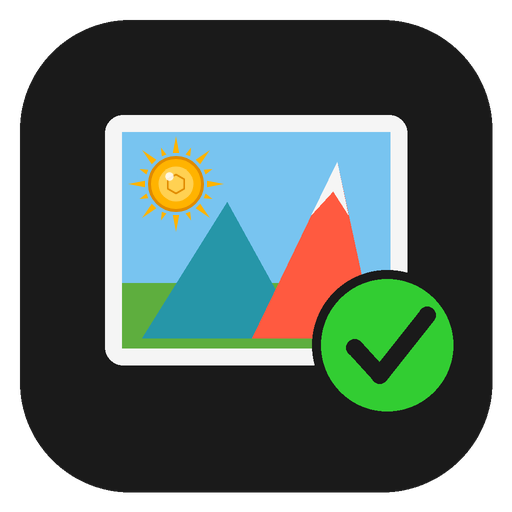
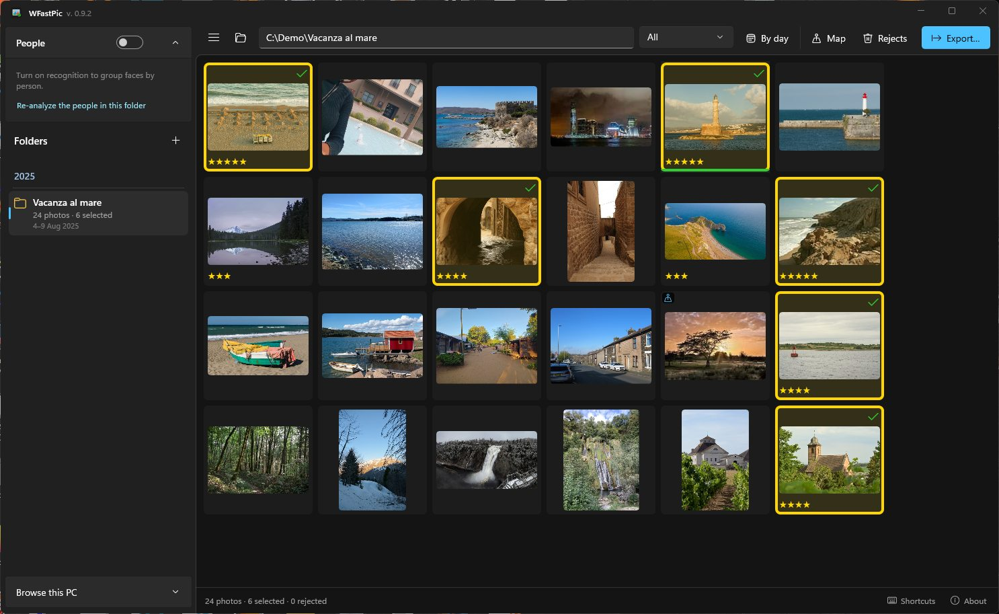
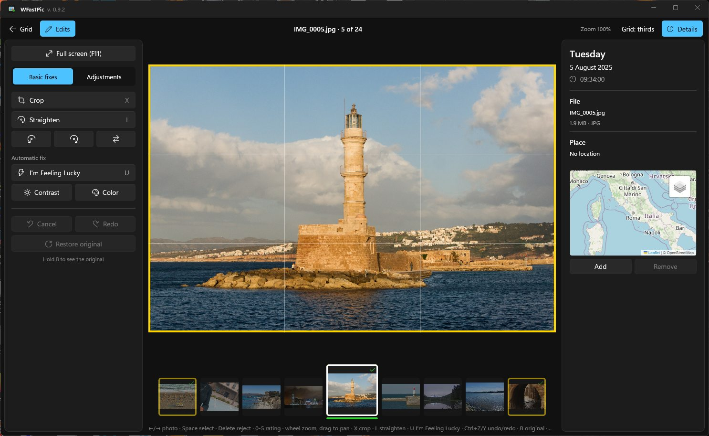

WFastPic
An open source tribute to Picasa, for Windows: pick and fix hundreds of photos fast.
Open the vacation folder, press Space to keep the good shots and Delete to reject the rest, fix a few in one click and export. Built for large HEIC collections from iPhones, drones and cameras — all from the keyboard, without ever waiting.
Version 1.1.0 · Windows 10 and 11 · free and open source (MIT) · no admin rights needed · all downloads


Sample photos under CC0 from Wikimedia Commons.
Why it exists
Google stopped developing Picasa in 2016, and it cannot read the HEIC photos phones take today.
What I missed most about Picasa was being able to go through all the photos of a vacation, pick the good ones on the fly, improve them in a click and then export them. No other program does it so comfortably and so fast. WFastPic is my way of getting that program back, on today's Windows and with today's photos. — Walter, author of WFastPic
It is not Lightroom and not a file manager: it is the tool for going from 1,300 shots to the 80 photos worth keeping, in as few gestures as possible.
What it does
Pick
- Fast grid even with thousands of photos, in shooting order, optionally split by day.
- Space selects, Delete rejects, 0–5 stars.
- Bursts detected automatically: Shift+Space keeps this one and rejects the rest.
- Automatic quality rating that flags blurry and dark shots — always kept separate from yours.
Fix
- Crop with suggested crops that never cut faces; straighten; rotate and flip.
- “I'm Feeling Lucky”, fill light, highlights, shadows, temperature.
- Non-destructive: the original file is never touched.
Find again
- Folders grouped by year, like Picasa.
- Photo map with place names, location fixable by hand.
- People: on-device face recognition, names shared across folders.
- Duplicates, like Picasa: identical copies and the same photo saved again smaller, even across folders.
- Live Photos and DJI drone data recognized.
Export
- JPEG at original or reduced size, chosen quality.
- Watermark and tags.
- Shooting date and GPS kept — or removed, if you prefer.
From Picasa to WFastPic
If you used Picasa, you already know how it works.
| In Picasa | In WFastPic |
|---|---|
| Folders grouped by year | Folder panel by year, with photo count and period |
| Stars and “kept” photos | Space selects, 0–5 stars, Delete rejects (never an irreversible delete) |
| “I'm Feeling Lucky” | U: automatic contrast and color in one go |
| Crop and straighten | Crop with ratios and suggested crops, straightening together with cropping |
| People (named faces) | Face recognition on your PC, names shared across folders |
| “Show duplicate files” | Duplicates filter: identical and resaved copies, also in other folders, with the copy to keep suggested |
| Photos on a map | Photo map and place names |
| Export | Resized JPEGs, watermark, tags, date and GPS preserved |
| — | Bursts, HEIC photos, Live Photos, DJI drone data |
Your photos stay yours
Originals untouched
- Selections, stars and edits live in a hidden
.wfastpicfolder next to the photos.
Everything on your PC
- No account, no cloud, no telemetry. Face recognition runs locally.
Only what you choose
- Map tiles, place names and the update check can all be turned off. Privacy note
Install
- Download the setup
WFastPic-1.1.0-win-x64-setup.exefrom the releases page. Prefer no installer? Take the portable.zip. - Run it. No administrator rights needed. The program is not yet digitally signed, so Windows may show “Windows protected your PC”: click “More info” → “Run anyway”. Code signing policy
- Open a folder of photos and start pressing Space.
Questions
Is WFastPic free?
Yes. It is open source under the MIT license, with no ads, no account and no paid version.
Does it open HEIC photos from iPhone?
Yes, it is built for them. Windows needs the HEIF and HEVC extensions, which are usually already installed; if photos do not open, get them from the Microsoft Store. Step by step: how to open HEIC photos on Windows.
Does it change my original photos?
Never. Edits are saved as a recipe next to the photos and applied when you view or export. Rejects go to the Recycle Bin (with confirmation) or to a separate folder.
Which languages and systems?
English and Italian. Windows 10 (1809 or later) and Windows 11.